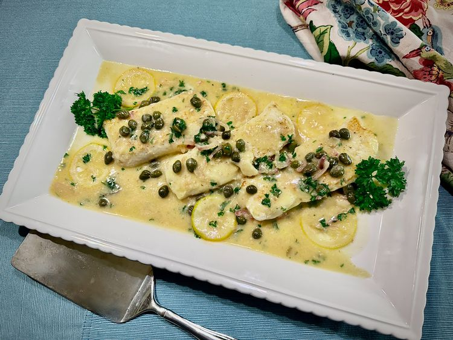

Cod Piccata

Description
Cod Piccata is a light and flavorful dish featuring pan-seared cod fillets in a tangy lemon-caper sauce. This dish is perfect for a quick weeknight dinner or a special occasion, offering a delightful balance of flavors that pairs well with pasta or vegetables.
Ingredients
- 4 cod fillets
- 1/4 cup all-purpose flour
- Salt and pepper to taste
- 2 tablespoons olive oil
- 2 tablespoons butter
- 1/4 cup fresh lemon juice
- 1/4 cup chicken broth
- 2 tablespoons capers, rinsed and drained
- 2 tablespoons fresh parsley, chopped
- Lemon slices for garnish
Instructions
- Season the cod fillets with salt and pepper, then dredge them in flour, shaking off any excess.
- In a large skillet, heat the olive oil and butter over medium-high heat.
- Add the cod fillets to the skillet and cook for about 3-4 minutes on each side, or until golden brown and cooked through. Remove the fillets from the skillet and set aside.
- In the same skillet, add the lemon juice, chicken broth, and capers. Bring to a simmer, scraping up any browned bits from the bottom of the skillet.
- Return the cod fillets to the skillet and spoon the sauce over them. Cook for an additional 1-2 minutes to heat through.
- Sprinkle with fresh parsley and garnish with lemon slices before serving.